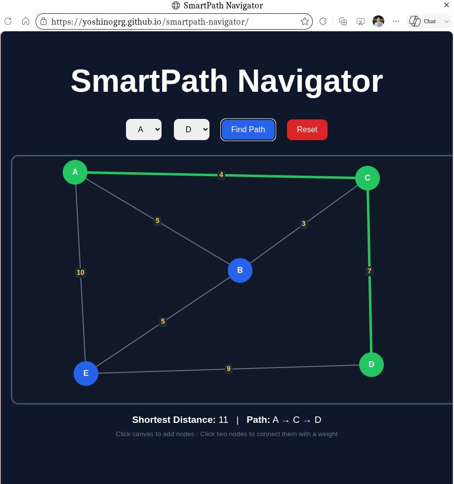

My Projects

Person & Object Detection AI
Real-time AI detection system capable of identifying people and multiple objects through live webcam feed using computer vision and deep learning models.
- Live webcam detection
- Real-time bounding boxes
- Person detection
- Multi-object recognition
- AI confidence scores
- Smooth animations
Python
OpenCV
YOLO
Computer Vision
AI
View GitHub
Play with me Tic Tac Toe
Cookie Tracker (PHP/Java/JS)
A multi-language project that accesses and securely stores your Name and Location using browser cookies.

Kira AI Assistant
Personal AI assistant with voice interaction, animated anime face UI, automation tools, memory handling, and intelligent responses.
Python
AI
Voice Recognition
Automation
View GitHub

SmartPath Navigator
Advanced DSA-based navigation engine implementing shortest-path algorithms, intelligent routing, and visual map interaction.
DSA
Algorithms
JavaScript
Pathfinding
View GitHub

Kira Stream
Netflix-inspired cinematic streaming platform UI with responsive design, smooth animations, and modern interface architecture.
HTML
CSS
JavaScript
UI/UX
View GitHub